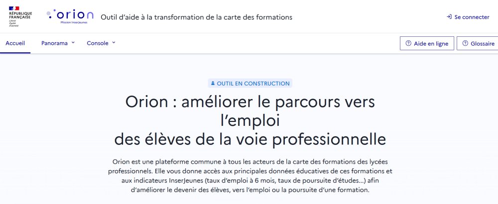
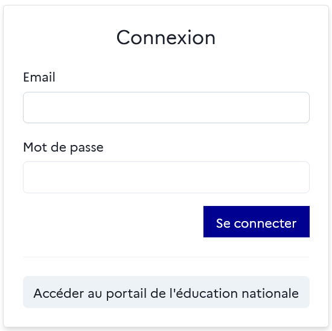
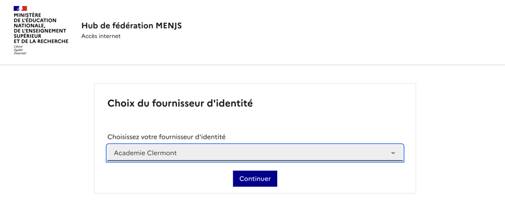
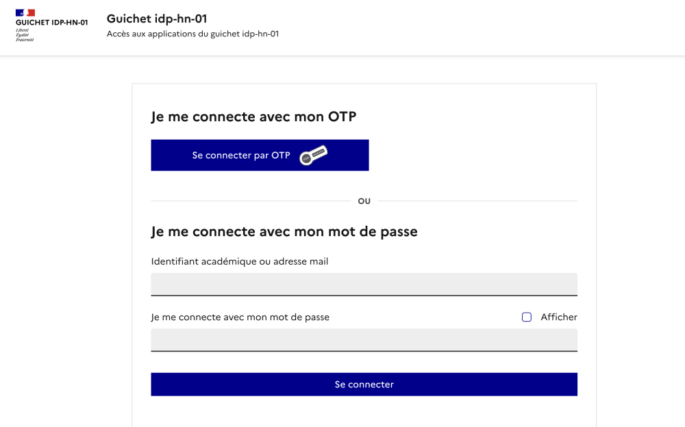
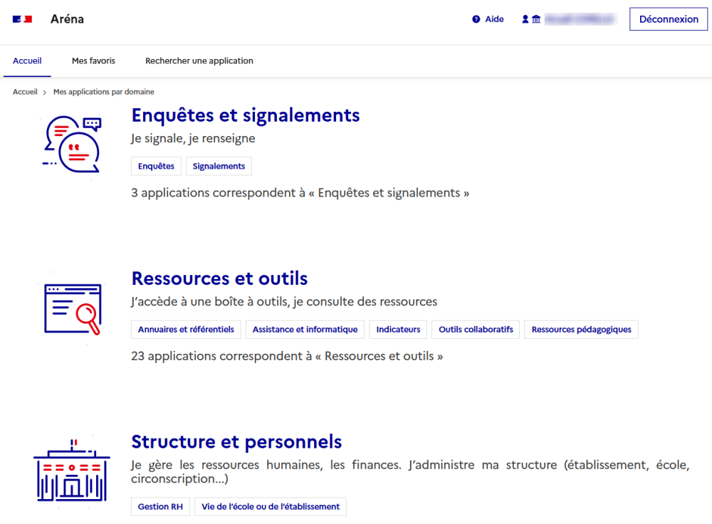
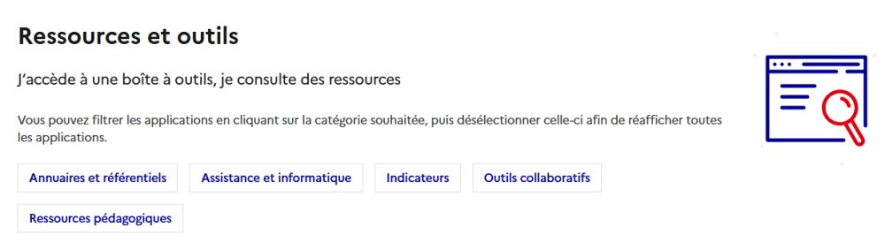
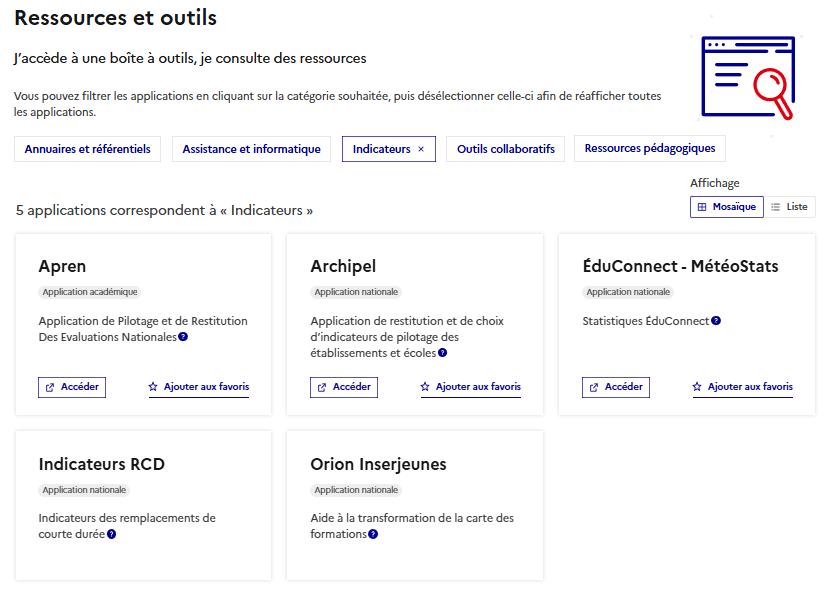

L’accès à Orion est progressivement simplifié pour toutes les fonctions internes à l’Éducation Nationale et se fait via le portail habituel (Aréna, Pleiade). Les agents du ministère de l'Éducation Nationale ont automatiquement accès au mode connecté Orion, sans devoir en faire la demande.
Parmi les fonctions concernées, on retrouve : DRAFPIC, DRAIO, SGRA, DOS, SSA, RDSI, CFP, CMQ, DGESCO, IGESR, Recteurs, INS, DASEN, PERDIR, etc.
L’accès à Orion est progressivement simplifié pour toutes les fonctions internes à l’Éducation Nationale et se fait via le portail habituel (Aréna, Pleiade). Les agents du ministère de l'Éducation Nationale ont automatiquement accès au mode connecté Orion, sans devoir en faire la demande.
Parmi les fonctions concernées, on retrouve : DRAFPIC, DRAIO, SGRA, DOS, SSA, RDSI, CFP, CMQ, DGESCO, IGESR, Recteurs, INS, DASEN, PERDIR, etc.
Se rendre sur Orion⚓
Se rendre sur Orion et cliquer sur
Se connecteren haut à droite de l’écran. On arrive sur la page de connexion.
Accéder au portail de l’éducation nationale⚓
Cliquer sur
Accéder au portail de l’éducation nationalesous la fenêtre de connexion.
Fournisseur d’identité⚓
Choisir le
fournisseur d’identitéhabituel (ex : l'académie).
Connexion⚓
Renseigner les
identifiantetmot de passeAréna habituels.
Portail Aréna⚓
Se rendre dans le menu
Ressources et outils.
Portail Aréna - Ressources et outils⚓
Sélectionner le sous-domaine « Indicateurs » ou faire défiler la page vers le bas.

Portail Aréna- Indicateurs⚓
Cliquer sur le lien « Orion InserJeunes ».
